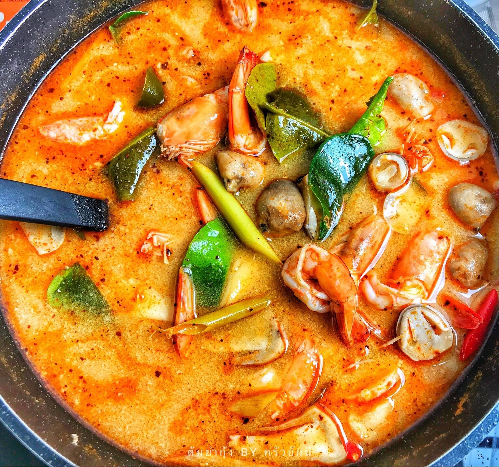

อาหารยอดนิยมของคนไทย:)
ไก่ทอดหาดใหญ่
เป็นไก่ทอดที่ได้รับความนิยมอย่างมาก
ข้าวผัดกุ้ง
เป็นอีกหนึ่งเมนูที่คนไทยชอบกินเพราะทำง่ายและวัตถุดิบใช่ไม่มาก

ต้มยำกุ้งน้ำข้น
เมนูขึ้นชื่อของประเทศไทยที่ต่างชาติก็รู้จักเป็นอย่างดี